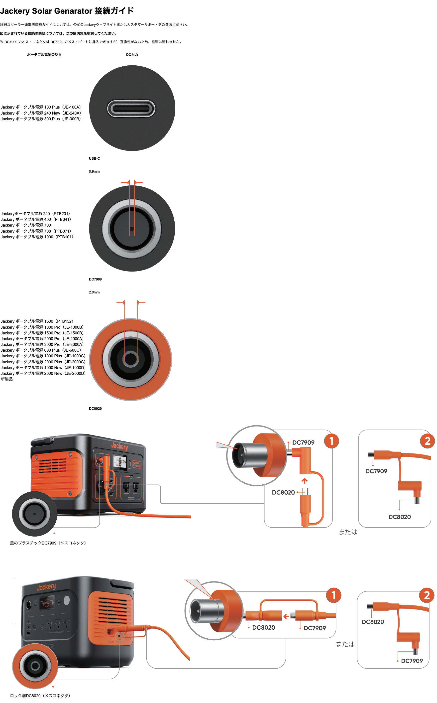

原 PDF（12 pages）SHA-256 c1f0f04e5ee672bb1c82f3d0b5ca009dc4459db3a6152d74a96acd489caff67c全物理ページ一覧 · 原 PDF を開く
既存の共有参照版JS-CONNECTION-GUIDE JP / git-20261026-bc35fd65-connection-guide。同モデルの既存 Web なし。参照版の原寸